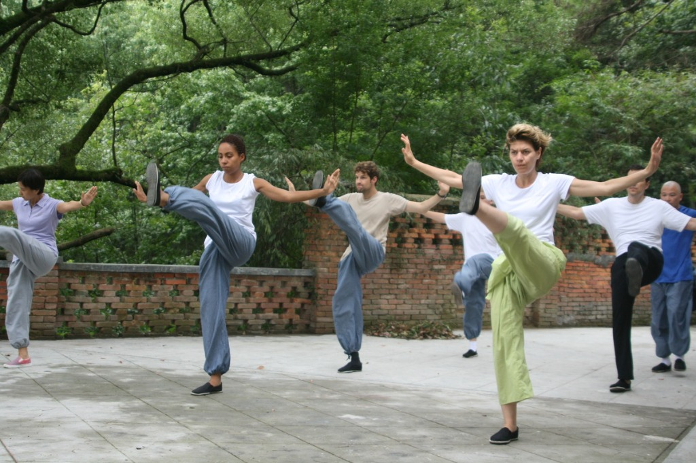
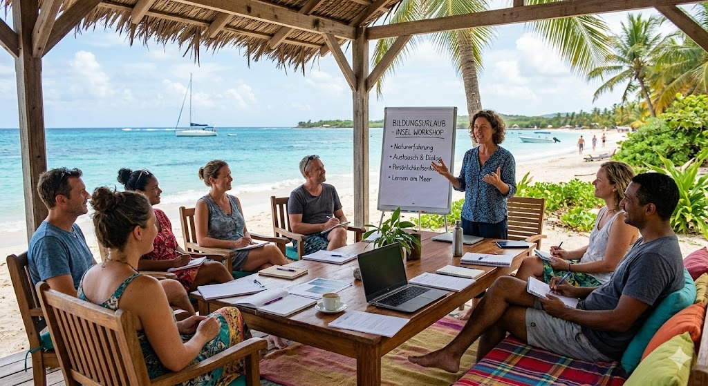

Mindful Leadership &
Persönlichkeitsentwicklung
Zertifizierter Bildungsurlaub auf den griechischen Kykladen — für Menschen, die ihre Selbstführung stärken, klarer kommunizieren und bewusster mit Verantwortung umgehen möchten. Fernab vom beruflichen Alltag verbindet das Programm mentale Stärke, Bewegung, Reflexion und moderne Führungsarbeit in einer naturnahen Umgebung.
Erholen, reflektieren und wachsen – mit staatlicher Unterstützung.
Bildungsurlaub ist eine staatlich geregelte Freistellung für Arbeitnehmer zur beruflichen und persönlichen Weiterbildung – bei vollem Gehalt und mit zusätzlichem Sonderurlaub.
Für dieses Programm erhalten Sie nach deutschen Bildungsurlaubsgesetzen (BU-Gesetzen) Sonderurlaub. Ihr Arbeitgeber zahlt Ihr Gehalt weiter, während Sie auf einer griechischen Insel Ihre Stresskompetenz und Führungsqualität stärken. Sämtliche Kosten – inklusive Anreise, Unterkunft und Seminargebühren – sind steuerlich absetzbar.
Selbstführung als Fundament moderner Leadership
Gute Führung beginnt nicht bei Methoden, sondern bei der Fähigkeit, mit sich selbst bewusst umzugehen. Wer auch in herausfordernden Situationen ruhig, klar und präsent bleibt, kann Teams stabil und verantwortungsvoll begleiten.
Mentale Klarheit & Selbstregulation
Sie lernen, Stressmuster frühzeitig wahrzunehmen und bewusster darauf zu reagieren. Durch praxisnahe Übungen und wissenschaftlich fundierte Ansätze stärken Sie Fokus, Entscheidungsfähigkeit und emotionale Stabilität im Berufsalltag.
Körperbewusstsein & Resilienz
Yoga, Atemarbeit und achtsame Bewegungsformen unterstützen dabei, innere Ruhe und körperliche Belastbarkeit aufzubauen. Ziel ist es, Stress nicht nur mental zu verstehen, sondern auch körperlich besser regulieren zu können.
Körperpräsenz &nonverbale Kommunikation
Elemente aus der Körperarbeit und dem traditionellen Kung-Fu fördern Haltung, Präsenz und bewusste Wirkung im Umgang mit anderen. In Gruppenübungen reflektieren Sie Kommunikationsmuster, Statusverhalten und soziale Dynamiken.
Workshops für mentale Stärke, Bewegung und Zusammenarbeit
Unsere Programm verbindet Persönlichkeitsentwicklung, pädagogische Methoden und körperorientiertes Lernen in einer natürlichen Umgebung. Statt rein theoretischer Inhalte stehen praktische Erfahrungen, Reflexion und gemeinsames Lernen im Mittelpunkt.
Yoga & Nervensystem
Yoga unterstützt Stressregulation, Körperbewusstsein und mentale Stabilität im Berufsalltag und stärkt innere Ruhe und Selbstregulation.
DetailsKung-Fu & Fokus
Elemente aus den Kampfkünsten fördern Erdung, Distanzwahrnehmung und den bewussten Umgang mit Druck im Führungskontext.
DetailsAtem & Stille
Der Atem wird als zentrales Werkzeug zur Stressregulation, Fokussierung und emotionalen Stabilität genutzt und durch praktische Techniken zur bewussten Selbststeuerung trainiert.
DetailsMindful Leadership
Gruppenreflexion, systemisches Coaching und Kommunikationstraining für gesunde Führung.
DetailsAmorgos & Paros – Die ruhige Seite der Kykladen
Natur schafft Abstand zum Alltag und eröffnet Raum für neue Perspektiven. Das klare Licht, die felsigen Küsten und die Ruhe der Ägäis bilden den Rahmen für konzentriertes Lernen, Reflexion und bewusste Erholung.
Für das Programm wurden bewusst Orte gewählt, die fernab vom klassischen Massentourismus liegen. Die natürliche Umgebung von Amorgos und Paros unterstützt dabei, den Fokus neu auszurichten und sich für einige Tage vollständig aus dem beruflichen Tempo herauszulösen. Die Workshops und Sessions finden teilweise auf offenen Plattformen mit Blick auf das Meer statt — in einer Umgebung, die Ruhe, Konzentration und gemeinsames Lernen fördert.
Unterbringung in hochwertigen, landestypischen 4- und 5-Sterne-Hotels mit ruhiger Atmosphäre und regionaler Küche.
Frisch zubereitete Mahlzeiten mit regionalen und biologischen Zutaten unterstützen Regeneration, Energie und Wohlbefinden während des Aufenthalts.
Stimmen aus der Praxis
Wie Führungskräfte, Selbstständige und HR-Verantwortliche den Transfer des Erlernten in ihren anspruchsvollen Arbeitsalltag erlebt haben.
„Die Kombination aus systemischem Coaching und Kung-Fu-Präsenz war für mich ein echter Gamechanger. Ich habe gelernt, mein Nervensystem in stressigen Aufsichtsratssitzungen innerhalb von Sekunden herunterzuregulieren.“
„Der Bildungsurlaub auf Amorgos hat meine Sicht auf Mitarbeiterführung nachhaltig verändert. Durch das Achtsamkeitstraining führe ich mein Team heute mit spürbar mehr Gelassenheit und Klarheit – bei gleichzeitig besseren Ergebnissen.“
„Am Anfang war ich skeptisch wegen der Körperarbeit. Aber die Kung-Fu-Einheiten haben mir meine eigenen Status-Muster glasklar vor Augen geführt. Ein unbezahlbares Seminar in einer unfassbar schönen, inspirierenden Natur.“
Häufig gestellte Fragen
Hier finden Sie schnelle Antworten auf organisatorische und inhaltliche Kernfragen zum Bildungsurlaub.
Die Beantragung ist unkompliziert: Nach Ihrer Buchung erhalten Sie von uns alle notwendigen Unterlagen (Anerkennungsbescheid des Bundeslandes, detaillierter Verlaufsplan und Anmeldebestätigung). Diese reichen Sie einfach bei Ihrem Arbeitgeber bzw. der HR-Abteilung ein – idealerweise 6 bis 8 Wochen vor Kursbeginn. Nach erfolgreicher Durchführung erhalten Sie das Teilnahmezertifikat zur Vorlage.
Arbeitgeber können einen Bildungsurlaub nur unter sehr strengen Voraussetzungen (z.B. dringende betriebliche Belange wie Personalmangel oder bereits genehmigte Urlaube anderer Mitarbeiter zu diesem Zeitpunkt) ablehnen. Falls eine Ablehnung erfolgt, bieten wir Ihnen eine kostenfreie Umbuchung auf einen Ausweichtermin oder erstatten Ihre Seminargebühr vollständig.
Ja, absolut. Sowohl die Yoga- als auch die Kung-Fu-basierten Somatik-Einheiten sind methodisch so aufgebaut, dass sie für alle Fitnesslevel und Altersstufen geeignet sind. Es geht nicht um sportliche Höchstleistungen oder akrobatische Figuren, sondern ausschließlich um Körperwahrnehmung, energetische Standfestigkeit und die spürbare Regulierung des Nervensystems.
Ja. Da es sich um eine zertifizierte berufliche Weiterbildungsmaßnahme handelt, können Sie sowohl die Seminargebühr als auch die Reisekosten (Flug, Hotelanteil, Verpflegungspauschale) in Ihrer Einkommensteuererklärung als Werbungskosten (bzw. Betriebsausgaben bei Selbstständigen) voll steuerlich geltend machen.
Das pädagogische Konzept
Das Programm verbindet Leadership, Persönlichkeitsentwicklung und körperorientiertes Lernen zu einer praxisnahen Weiterbildung, die echte Führungskompetenz stärkt.
Veränderung entsteht durch Erfahrung
Viele klassische Seminare vermitteln Wissen, das im Berufsalltag nur schwer nachhaltig umgesetzt wird. Besonders unter Stress greifen Menschen häufig auf automatische Verhaltensmuster zurück, obwohl theoretisch andere Lösungen bekannt sind.
Genau hier setzt das Programm an: Lernen soll nicht nur auf kognitiver Ebene stattfinden, sondern auch durch körperliche Erfahrung, bewusste Reflexion und praktische Anwendung
Die Teilnehmenden beschäftigen sich mit Stressregulation, Kommunikation, Selbstführung und modernen Leadership-Ansätzen. Inhalte aus Psychologie, Pädagogik und Verhaltensforschung werden praxisnah vermittelt.
Yoga, Atemarbeit, Bewegungsübungen und achtsame Körperarbeit helfen dabei, Spannungen bewusster wahrzunehmen und die eigene Stressregulation zu verbessern.
Die Inhalte werden durch Gruppenübungen, Reflexionsrunden und realitätsnahe Situationen mit typischen Herausforderungen aus Teamarbeit und Führung verbunden.
Ein exemplarischer Seminartag
Der Tagesablauf verbindet konzentrierte Lernphasen mit Bewegung, Reflexion und bewussten Erholungszeiten. Ziel ist ein ausgewogener Rhythmus, der mentale Aufnahmefähigkeit, körperliche Aktivität und persönliche Entwicklung miteinander verbindet. Klicken Sie auf die einzelnen Tagesphasen, um mehr über Inhalte, Methoden und den Ablauf des Programms zu erfahren.
Aktivierung & Fokussierung am Meer
Der Tag beginnt mit achtsamer Bewegung, Atemarbeit und ruhigen Übungen in der natürlichen Umgebung der Inseln. Yoga- und Breathwork-Einheiten unterstützen dabei, Körper und Geist bewusst auf den Tag auszurichten.
Die Morgenstunden schaffen Raum, um den Fokus zu stärken, innere Ruhe aufzubauen und mit mehr Klarheit in die Lern- und Workshopphasen zu starten.
Gemeinsames mediterranes Frühstück
Der Morgen beginnt mit einem frischen Frühstück aus regionalen und biologischen Zutaten, saisonalem Obst sowie ausgewählten Teespezialitäten.
Neben der bewussten Ernährung bietet diese Zeit Raum für entspannte Gespräche, Austausch innerhalb der Gruppe und erste gemeinsame Reflexionen vor den Workshops des Tages.
Seminarblock I: Reflexion, Leadership & Gruppenarbeit
Die Vormittagseinheiten verbinden moderne Leadership-Themen mit Reflexion, Austausch und praxisnahen Übungen in einer offenen Lernatmosphäre.
Im Fokus stehen Themen wie Kommunikation, Stressregulation, Teamdynamiken und bewusste Selbstführung. Einzel- und Gruppenübungen, Reflexionsphasen sowie gemeinsame Diskussionen unterstützen den Transfer in den beruflichen Alltag. Zwischen den Einheiten sorgen kleine Pausen mit frischen Snacks und Getränken für Erholung und neue Konzentration.
Seminarblock II: Körperarbeit, Präsenz & Konfliktdynamik
Die Nachmittagsmodule konzentrieren sich auf körperorientiertes Lernen, nonverbale Kommunikation und bewusste Präsenz in herausfordernden Situationen.
Durch Partnerübungen, Bewegungsarbeit und Elemente aus dem Kung-Fu werden Themen wie Grenzen setzen, Haltung, Körpersprache und der Umgang mit Druck praktisch erfahrbar gemacht. Die Übungen fördern ein bewussteres Verständnis von Wirkung, Teamdynamik und persönlichem Auftreten.
Mediterranes Abendessen & Tagesreflexion
Der Seminartag endet in entspannter Atmosphäre bei mediterraner Küche und gemeinsamen Gesprächen.
Die Abendstunden bieten Raum für Austausch, Reflexion und persönliche Gespräche innerhalb der Gruppe — begleitet von der ruhigen Umgebung der Inseln und dem natürlichen Rhythmus des Retreats.
Lernziele & Kernkompetenzen
Dieses Programm ist eine praxisorientierte Weiterbildung im Bereich moderner Führung und persönlicher Entwicklung. Der Fokus liegt auf Fähigkeiten, die direkt im beruflichen Alltag angewendet werden können.
Stresskompetenz & Selbstregulation
Sie entwickeln ein besseres Verständnis für Stressreaktionen und lernen, in herausfordernden Situationen bewusster und stabiler zu reagieren. Ziel ist es, die eigene Belastbarkeit zu stärken und langfristig gesündere Arbeitsweisen zu fördern.
Empathische & Gesunde Führung
Sie schärfen Ihre Wahrnehmung für Belastungssignale im Team und lernen, klar, respektvoll und lösungsorientiert zu kommunizieren. Dabei steht eine wertschätzende und psychologisch sichere Führungskultur im Mittelpunkt.
Präsenz & souveränes Auftreten
Sie verbessern Ihre Körpersprache, Stimme und innere Haltung, um in beruflichen Situationen klarer und sicherer zu wirken. Auch der bewusste Umgang mit Konflikten und unterschiedlichen sozialen Dynamiken wird trainiert.
Eindrücke aus den Seminar-Wochen


Wissenschaftliche Methoden
Das Programm basiert auf Erkenntnissen aus Psychologie, Neurobiologie und moderner Lernforschung. Ziel ist es, nachhaltige Veränderungen zu fördern und neue Fähigkeiten wirksam in den beruflichen Alltag zu übertragen.
Verständnis der Funktion des Nervensystems Sie lernen praxisnahe Methoden kennen, um Belastungen bewusster zu steuern und Ihre mentale Widerstandskraft zu stärken.
Aktuelle Forschung zeigt, dass Körper und Geist eng miteinander verbunden sind. Durch körperorientierte Übungen werden Selbstwahrnehmung, emotionale Stabilität und mentale Klarheit gezielt gefördert.
Neue Erkenntnisse entfalten ihren Wert erst dann, wenn sie im Alltag angewendet werden. Deshalb setzt das Programm auf erfahrungsorientiertes Lernen und konkrete Strategien für die langfristige Umsetzung im Berufsleben.
Die Fokus-Themen
Unsere Seminare konzentrieren sich auf vier essenzielle Kernbereiche moderner und gesunder Führung.
Neuro-Leadership & Fokus
Nutzen Sie Erkenntnisse aus der Neurowissenschaft, um Konzentration, mentale Klarheit und bewusste Entscheidungsfähigkeit im beruflichen Alltag zu stärken.
Resilienz & Stressprävention
Lernen Sie nachhaltige Strategien für den Umgang mit beruflichen Belastungen und stärken Sie Ihre Fähigkeit, auch in herausfordernden Situationen gesund, fokussiert und handlungsfähig zu bleiben.
Systemische Führung & Status
Verstehen und gestalten Sie die sozialen Dynamiken in Ihrem Team. Durch die Analyse von Status-Verhalten lernen Sie, Konflikte konstruktiv zu lösen und psychologische Sicherheit zu etablieren.
Somatische Selbstregulation
Nutzen Sie die Verbindung von Körper und Geist zur unmittelbaren Stressregulation. Körperorientierte Methoden helfen Ihnen, auch in kritischen Momenten Ruhe und Präsenz zu bewahren.
Die Workshops & Aktivitäten
Erfahren Sie mehr über die konkreten Einheiten unseres Lehrplans. Jedes Modul ist psychologisch durchdacht und wird von erfahrenen Trainern geleitet.
Hatha & Yin Yoga im Kontext moderner Führung
Yoga ist in diesem Programm kein rein körperliches Training, sondern ein gezieltes Instrument zur Förderung von Stressregulation, Körperbewusstsein und mentaler Stabilität im beruflichen Alltag.
Im Mittelpunkt stehen Atemtechniken und ausgewählte Körperhaltungen (Asanas), die helfen, Spannungen zu reduzieren und innere Ruhe zu fördern. Durch regelmäßige Praxis wird die Wahrnehmung für den eigenen Körper geschärft und die Fähigkeit zur Selbstregulation gestärkt. Ein besonderer Fokus liegt auf der Verbindung von körperlicher Entspannung und mentaler Klarheit, um langfristig eine stabilere Belastbarkeit im Arbeits- und Führungsalltag zu unterstützen.
Kung-Fu & Somatische Präsenz im Umgang mit Konflikten
Elemente aus den Kampfkünsten werden in diesem Modul in einen modernen Führungskontext übertragen. Im Mittelpunkt stehen Erdung, Distanzwahrnehmung und der bewusste Umgang mit Drucksituationen.
Durch strukturierte Partnerübungen aus dem traditionellen Kung-Fu (u. a. Wing Tsun & Qi Gong) werden Konflikt- und Stresssituationen körperlich erfahrbar gemacht. Ziel ist es, typische Reaktionsmuster unter Druck besser zu verstehen und flexibler darauf zu reagieren. Statt in Anspannung zu verharren oder in Rückzug zu gehen, lernen die Teilnehmenden, Druck kontrolliert wahrzunehmen, ihn bewusst zu lenken und eine stabile innere Mitte zu behalten. Dies stärkt insbesondere die nonverbale Präsenz in Kommunikation, Verhandlungen und Führungssituationen.
Mindful Leadership & High-Performance
Dieses Modul bildet das kognitive Fundament des Programms und verbindet moderne Führungskonzepte mit achtsamkeitsbasierten und neurowissenschaftlich inspirierten Ansätzen.
Im Fokus stehen zeitgemäße Modelle der transformationalen und gesundheitsorientierten Führung. Die Teilnehmenden reflektieren persönliche Antriebsmuster, Verhaltensgewohnheiten und mögliche blinde Flecken im eigenen Führungsstil. Darauf aufbauend werden Methoden zur emotionalen Selbstregulation sowie zur bewussten Entscheidungsfindung unter Unsicherheit vermittelt. Ein weiterer Schwerpunkt liegt auf dem Aufbau psychologischer Sicherheit in leistungsstarken Teams und einer klaren, werteorientierten und empathischen Führungskultur.
Breathwork & Atemphysiologie
Der Atem ist eine der zentralen Schnittstellen zwischen Körper und Nervensystem und spielt eine entscheidende Rolle bei der Regulation von Stress, Fokus und emotionaler Stabilität.
In diesem Modul erhalten die Teilnehmenden ein grundlegendes Verständnis der physiologischen Zusammenhänge der Atmung und ihrer Wirkung auf das autonome Nervensystem. Darauf aufbauend werden verschiedene bewährte Atemtechniken praktisch angewendet, darunter ruhige, rhythmische und aktivierende Atemformen. Ziel ist es, den Atem als bewusstes Werkzeug zur Selbstregulation zu nutzen – insbesondere in Situationen hoher Belastung. Dadurch kann es gelingen, Stressreaktionen besser zu steuern und die eigene mentale Klarheit im Alltag schneller wiederherzustellen.
Achtsames Wandern in Stille
Die Verbindung von Bewegung, Natur und Stille als kraftvolles Werkzeug zur mentalen Klärung und Entschleunigung.
Durch bewusstes, achtsames Wandern in der Ruhe der Natur lernen die Teilnehmenden, das ständige kognitive Rauschen des Alltags hinter sich zu lassen. Die körperliche Bewegung im Einklang mit der Natur unterstützt den mentalen Reset und fördert eine tiefe innere Ausgeglichenheit. Fernab von ständiger Erreichbarkeit und Informationsüberflutung eröffnet das Wandern in Stille einen Raum für tiefgreifende Selbstreflexion und die Wiederherstellung kognitiver Ressourcen.
Dialog & Kommunikation
Kommunikation als zentraler Schlüssel für erfolgreiche Führung, Teamdynamik und psychologische Sicherheit am Arbeitsplatz.
Dieses Modul widmet sich den Prinzipien der gewaltfreien und wertschätzenden Kommunikation. Die Teilnehmenden trainieren aktives Zuhören, das Erkennen eigener und fremder Kommunikationsmuster sowie Techniken zur konstruktiven Konfliktlösung. Im professionellen Kontext ermöglicht eine bewusste Gesprächsführung den Abbau von Spannungen, die Förderung von Vertrauen und eine klarere, zielgerichtete Zusammenarbeit ohne persönliche Verletzungen.
Hochstatus- & Tiefstatus-Training
Bewusster Umgang mit Statusdynamiken für eine souveräne und flexible Führungspräsenz in jeder Situation.
Führungskräfte interagieren täglich in unterschiedlichen Statusgefügen. In diesem Training lernen die Teilnehmenden, das nonverbale und verbale Zusammenspiel von Hoch- und Tiefstatus zu verstehen und gezielt einzusetzen. Das Erkennen von Statusspielen und die Fähigkeit, den eigenen Status situationsgerecht anzupassen, fördern eine authentische Präsenz, erhöhen die Durchsetzungskraft und erleichtern gleichzeitig ein kooperatives Miteinander auf Augenhöhe.
Präventionskurs Stressbewältigung
Ein fundiertes Training zur Entwicklung langfristiger Stresskompetenz und zum Schutz vor Erschöpfung im Berufsalltag.
Der Präventionskurs vermittelt evidenzbasierte Strategien zur Identifikation von Stressauslösern (Stressoren) und persönlichen Verstärkern. Die Teilnehmenden erarbeiten individuelle Bewältigungsstrategien (Coping) und Techniken zur aktiven Entspannung. Im Fokus steht der Transfer des Gelernten in den Arbeitsalltag, um eine gesunde Balance zwischen Leistungsfähigkeit und Regeneration zu etablieren und damit Überlastung und Burnout präventiv entgegenzuwirken.
Bildungsurlaub & Anerkennung
Ihr gutes Recht auf lebenslanges Lernen. Wir unterstützen Sie lückenlos bei der Beantragung und stellen die staatliche Zertifizierung sicher.
Was ist Bildungsurlaub genau?
Bildungsurlaub (auch Bildungsfreistellung genannt) ist ein gesetzlich verankertes Recht für Arbeitnehmer, sich während der Arbeitszeit bei fortlaufendem Gehalt weiterzubilden.
In den meisten Bundesländern (mit Ausnahme von Bayern und Sachsen) besteht in der Regel ein Anspruch auf bis zu fünf bezahlte Weiterbildungstage pro Jahr, teilweise auch kumulierbar über zwei Jahre. Das Programm ist als berufliche, gesundheitsfördernde und persönlichkeitsbildende Weiterbildung anerkannt und erfüllt die jeweiligen gesetzlichen Anforderungen der Bundesländer.
Verankert in den Bildungsurlaubsgesetzen der Länder.
Als Werbungskosten voll abzugsfähig.
Prüfen Sie die Anerkennung in Ihrem Bundesland
Die gesetzlichen Regelungen und Fristen unterscheiden sich je nach Bundesland, in dem sich Ihr Arbeitsort befindet. Wählen Sie Ihr Bundesland aus, um die exakten Details zu sehen.
Steuerliche Absetzbarkeit & Teilnahmezertifikat
Die Kosten für das Programm können im Rahmen der geltenden steuerlichen Regelungen in vielen Fällen als beruflich veranlasste Weiterbildung geltend gemacht werden.
Da es sich um eine anerkannte Form der beruflichen Weiterbildung handelt, kann dies – abhängig von der individuellen Situation – auch Reise-, Unterkunfts- und Verpflegungskosten umfassen. Dadurch wird die Investition in Weiterbildung und persönliche Entwicklung finanziell häufig entlastet.
Das Teilnahmezertifikat
Nach Abschluss des Programms erhalten die Teilnehmenden ein ausführliches Teilnahmezertifikat. Dieses dokumentiert die Inhalte, den zeitlichen Umfang sowie die durchgeführten Lern- und Praxismodule. Das Zertifikat dient als offizieller Nachweis gegenüber Arbeitgebern und kann im Rahmen beruflicher Weiterbildungsprozesse verwendet werden
Gesetzliche Grundlagen
Der Bildungsurlaub ist in den meisten deutschen Bundesländern gesetzlich geregelt und ermöglicht Arbeitnehmerinnen und Arbeitnehmern die Teilnahme an anerkannten Weiterbildungsmaßnahmen während der Arbeitszeit. Die genauen Voraussetzungen und Ansprüche können je nach Bundesland variieren.
Rechtsanspruch & Dauer
Arbeitnehmerinnen und Arbeitnehmer haben in der Regel Anspruch auf 5 Tage Bildungsurlaub pro Jahr, vorausgesetzt, das Arbeitsverhältnis besteht seit mindestens 6 Monaten. Der Anspruch kann nicht in das nächste Jahr übertragen werden, außer in besonderen Fällen der Kumulation (z. B. 10 Tage innerhalb von zwei Jahren).
Anerkennungsverfahren
Damit ein Seminar als Bildungsurlaub anerkannt werden kann, muss es die gesetzlichen Anforderungen der jeweiligen Bundesländer erfüllen. Unsere Programme sind als berufliche Weiterbildungsmaßnahmen anerkannt und entsprechen den geltenden Vorgaben der zuständigen Behörden.
Fristen & Beantragung
Die Beantragung muss beim Arbeitgeber üblicherweise spätestens 4 bis 8 Wochen vor Seminarbeginn in schriftlicher Form erfolgen. Eine Ablehnung durch den Arbeitgeber ist rechtlich nur unter Angabe zwingender betrieblicher Gründe möglich.
Preise, Leistungen & Termine
Professionell organisiertes Bildungsurlaubs-Programm mit klarer Struktur, vollständiger Betreuung und flexiblen Unterkunftsoptionen für ein individuelles Retreat-Erlebnis.
Unsere Seminar-Wochen 2026
Perfekt für den kollegialen Austausch und geteilte Retreat-Erfahrung.
- 5-tägiges Seminarprogramm (35 Std.)
- Tägliche Yoga- & Kung-Fu-Einheiten
- Alle Anmelde- & Anerkennungsdokumente
- Offizielles Teilnahmezertifikat
Maximale Privatsphäre und tiefer Rückzug für optimale Regeneration.
- 10-tägiges Seminarprogramm (35 Std.)
- Tägliche Yoga- & Kung-Fu-Einheiten
- 1x Individuelle Executive Coaching-Session (60 Min)
- Alle Anmelde- & Anerkennungsdokumente + Zertifikat
Für anspruchsvolle Führungskräfte, die exklusiven Raum suchen.
- 15-tägiges Seminarprogramm (35 Std.)
- Tägliche Yoga- & Kung-Fu-Einheiten
- 2x Private Executive Coaching-Sessions (je 60 Min)
- Priorisierter Antrags-Support & alle Nachweise
In allen Paketen lückenlos enthaltene Leistungen
Wir unterstützen Sie vollständig bei der Beantragung Ihres Bildungsurlaubs und stellen alle erforderlichen Unterlagen für Ihre Personalabteilung bereit.
Sie erhalten ein hochwertiges, gebundenes Seminarjournal zur täglichen Reflexion, für Notizen und zur nachhaltigen Integration der Inhalte in Ihren Berufsalltag.
In allen Paketen nicht enthaltene Optionen
Die An- und Abreise per Flugzeug erfolgt in Eigenregie und ist nicht im Preis inbegriffen.
Die Buchung der Fähre überlassen wir den Teilnehmern und ist nicht im Seminarpreis enthalten.
Die Kosten für die Unterkunft im 4★-Resort werden separat direkt vor Ort beglichen.
Verpflegung, Abendessen und zusätzliche Getränke sind nicht im Seminarpreis enthalten.
Bildungsurlaub buchen
Lassen Sie uns gemeinsam den Weg zu Ihrem Bildungsurlaub ebnen. Unser Team berät Sie kompetent bei allen rechtlichen und organisatorischen Fragen.
Bildungsurlaub-buchen
Impressum
Gesetzliche Anbieterkennzeichnung der NÓOS Mindful Leadership GmbH gemäß § 5 TMG.
Angaben gemäß § 5 TMG
NÓOS Mindful Leadership GmbH
Kaiserstraße 12
60311 Frankfurt
am Main
Vertretungsberechtigte Geschäftsführer
Dr. Elena Prokopakis
Marcus Vogt
Kontakt & Sofortkommunikation
Telefon: +49 (0) 69 9876 5432
Telefax: +49 (0) 69 9876 5439
E-Mail: anfrage@noos-leadership.de
Internet: www.noos-leadership.de
Registereintrag
Registergericht: Amtsgericht Frankfurt am Main
Registernummer: HRB 123456
Umsatzsteuer-Identifikationsnummer
Umsatzsteuer-Identifikationsnummer gemäß § 27 a Umsatzsteuergesetz:
DE 987654321
Verantwortlich für den Inhalt nach § 18 Abs. 2 MStV
Dr. Elena Prokopakis
c/o NÓOS Mindful Leadership GmbH
Kaiserstraße 12
60311 Frankfurt am Main
Berufshaftpflichtversicherung
Allianz Versicherungs-AG
Königinstraße 28
80802 München
Räumlicher Geltungsbereich: Gesamter
EU-Raum sowie die europäischen Mitgliedstaaten des Schengener Abkommens.
EU-Streitschlichtung
Die Europäische Kommission stellt eine Plattform zur Online-Streitbeilegung (OS)
bereit: https://ec.europa.eu/consumers/odr.
Unsere
E-Mail-Adresse finden Sie oben im Impressum.
Verbraucherstreitbeilegung / Universalschlichtungsstelle
Wir sind nicht bereit oder verpflichtet, an Streitbeilegungsverfahren vor einer Verbraucherschlichtungsstelle teilzunehmen.
Haftungsausschluss (Disclaimer)
Haftung für Inhalte
Als Diensteanbieter sind wir gemäß § 7 Abs. 1 TMG für eigene Inhalte auf dieser Website nach den allgemeinen gesetzlichen Vorschriften verantwortlich. Nach §§ 8 bis 10 TMG sind wir jedoch nicht verpflichtet, übermittelte oder gespeicherte fremde Informationen aktiv zu überwachen oder nach Hinweisen auf rechtswidrige Tätigkeiten zu suchen. Verpflichtungen zur Entfernung oder Sperrung der Nutzung von Informationen nach den allgemeinen Gesetzen bleiben hiervon unberührt. Eine Haftung ist jedoch erst ab dem Zeitpunkt möglich, zu dem uns eine konkrete Rechtsverletzung bekannt wird. Sobald entsprechende Verstöße bekannt werden, entfernen wir die betreffenden Inhalte umgehend.
Haftung für Links
Diese Website enthält Links zu externen Websites Dritter, auf deren Inhalte wir keinen Einfluss haben. Deshalb übernehmen wir für diese Inhalte keine Gewähr. Für die Inhalte der verlinkten Seiten sind ausschließlich deren jeweilige Betreiber verantwortlich. Zum Zeitpunkt der Verlinkung wurden die externen Seiten auf mögliche Rechtsverstöße überprüft. Rechtswidrige Inhalte waren dabei nicht erkennbar. Eine dauerhafte inhaltliche Kontrolle der verlinkten Seiten ist ohne konkrete Hinweise auf Rechtsverletzungen jedoch nicht zumutbar. Bei Bekanntwerden entsprechender Verstöße werden betroffene Links umgehend entfernt.
Urheberrecht
Die auf dieser Website veröffentlichten Inhalte und Werke unterliegen dem deutschen Urheberrecht. Jede Art der Vervielfältigung, Bearbeitung, Verbreitung oder Nutzung außerhalb der urheberrechtlichen Grenzen bedarf der vorherigen schriftlichen Zustimmung der jeweiligen Rechteinhaber. Downloads und Kopien dieser Website sind ausschließlich für den privaten, nicht kommerziellen Gebrauch gestattet. Soweit Inhalte auf dieser Website nicht vom Betreiber erstellt wurden, werden die Urheberrechte Dritter beachtet und entsprechend gekennzeichnet. Sollten Sie dennoch auf eine mögliche Urheberrechtsverletzung aufmerksam werden, bitten wir um einen entsprechenden Hinweis. Bei Bekanntwerden von Rechtsverletzungen werden entsprechende Inhalte umgehend entfernt.
Datenschutzerklärung
Informationen über die Verarbeitung Ihrer personenbezogenen Daten gemäß der EU-Datenschutz-Grundverordnung (DSGVO).
1. Datenschutz auf einen Blick
Allgemeine Hinweise
Die folgenden Hinweise geben einen einfachen Überblick darüber, was mit Ihren personenbezogenen Daten passiert, wenn Sie diese Website besuchen. Personenbezogene Daten sind alle Daten, mit denen Sie persönlich identifiziert werden können. Ausführliche Informationen zum Thema Datenschutz entnehmen Sie unserer unter diesem Text aufgeführten Datenschutzerklärung.
Datenerfassung auf dieser Website
Wer ist verantwortlich für die Datenerfassung auf dieser
Website?
Die Datenverarbeitung auf dieser Website erfolgt durch den
Websitebetreiber. Dessen Kontaktdaten können Sie dem Impressum dieser Website entnehmen.
Wie erfassen wir Ihre Daten?
Ihre Daten werden zum einen dadurch
erhoben, dass Sie uns diese mitteilen. Hierbei kann es sich z. B. um Daten handeln, die Sie in
unser Anfrageformular eingeben. Andere Daten werden automatisch oder nach Ihrer Einwilligung
beim Besuch der Website durch unsere IT-Systeme erfasst. Das sind vor allem technische Daten (z.
B. Internetbrowser, Betriebssystem oder Uhrzeit des Seitenaufrufs).
Wofür nutzen wir Ihre Daten?
Ein Teil der Daten wird erhoben, um
eine fehlerfreie Bereitstellung der Website zu gewährleisten. Andere Daten können zur Analyse
Ihres Nutzerverhaltens verwendet werden.
Welche Rechte haben Sie bezüglich Ihrer Daten?
Sie haben
jederzeit das Recht, unentgeltlich Auskunft über Herkunft, Empfänger und Zweck Ihrer
gespeicherten personenbezogenen Daten zu erhalten. Sie haben außerdem ein Recht, die
Berichtigung oder Löschung dieser Daten zu verlangen. Wenn Sie eine Einwilligung zur
Datenverarbeitung erteilt haben, können Sie diese Einwilligung jederzeit für die Zukunft
widerrufen. Außerdem haben Sie das Recht, unter bestimmten Umständen die Einschränkung der
Verarbeitung Ihrer personenbezogenen Daten zu verlangen. Des Weiteren steht Ihnen ein
Beschwerderecht bei der zuständigen Aufsichtsbehörde zu.
Analyse-Tools und Tools von Drittanbietern
Wir weisen Sie ausdrücklich darauf hin, dass wir zum Schutz Ihrer Privatsphäre auf dieser Website bewusst auf verhaltensbasierte Tracking-Pixel (wie z. B. von Meta/Facebook) und externe Analyse-Plattformen von Drittanbietern (wie z. B. Google Analytics) verzichten.
2. Allgemeine Hinweise und Pflichtinformationen
Datenschutz
Die Betreiber dieser Seiten nehmen den Schutz Ihrer persönlichen Daten sehr ernst. Wir behandeln Ihre personenbezogenen Daten vertraulich und entsprechend den gesetzlichen Datenschutzvorschriften sowie dieser Datenschutzerklärung. Wenn Sie diese Website benutzen, werden verschiedene personenbezogene Daten erhoben. Diese Datenschutzerklärung erläutert, welche Daten wir erheben und wofür wir sie nutzen. Sie erläutert auch, wie und zu welchem Zweck das geschieht.
Wir weisen darauf hin, dass die Datenübertragung im Internet (z. B. bei der Kommunikation per E-Mail) Sicherheitslücken aufweisen kann. Ein lückenloser Schutz der Daten vor dem Zugriff durch Dritte ist nicht möglich.
Hinweis zur verantwortlichen Stelle
Die verantwortliche Stelle für die Datenverarbeitung auf dieser Website ist:
NÓOS Mindful Leadership GmbH
Kaiserstraße 12
60311 Frankfurt am Main
E-Mail: anfrage@noos-leadership.de
Verantwortliche Stelle ist die natürliche oder juristische Person, die allein oder gemeinsam mit anderen über die Zwecke und Mittel der Verarbeitung von personenbezogenen Daten (z. B. Namen, E-Mail-Adressen o. Ä.) entscheidet.
Speicherdauer
Soweit innerhalb dieser Datenschutzerklärung keine speziellere Speicherdauer genannt wurde, verbleiben Ihre personenbezogenen Daten bei uns, bis der Zweck für die Datenverarbeitung entfällt. Wenn Sie ein berechtigtes Löschbegehren geltend machen oder eine Einwilligung zur Datenverarbeitung widerrufen, werden Ihre Daten gelöscht, es sei denn, wir haben andere gesetzlich zulässige Gründe für die Speicherung Ihrer personenbezogenen Daten (z. B. steuer- oder handelsrechtliche Aufbewahrungsfristen); im letztgenannten Fall erfolgt die Löschung nach Fortfall dieser Gründe.
Rechtsgrundlagen der Datenverarbeitung
Sofern Sie in die Datenverarbeitung eingewilligt haben, verarbeiten wir Ihre personenbezogenen Daten auf Grundlage von Art. 6 Abs. 1 lit. a DSGVO. Im Falle einer ausdrücklichen Einwilligung in die Übertragung personenbezogener Daten in Drittstaaten erfolgt die Verarbeitung zudem auf Grundlage von Art. 49 Abs. 1 lit. a DSGVO. Sofern Sie in die Speicherung von Cookies oder in den Zugriff auf Informationen in Ihr Endgerät eingewilligt haben, erfolgt die Datenverarbeitung zusätzlich auf Grundlage von § 25 Abs. 1 TDDDG. Die Einwilligung ist jederzeit widerrufbar.
Sind Ihre Daten zur Vertragserfüllung oder zur Durchführung vorvertraglicher Maßnahmen erforderlich, verarbeiten wir Ihre Daten auf Grundlage von Art. 6 Abs. 1 lit. b DSGVO. Des Weiteren verarbeiten wir Ihre Daten, sofern diese zur Erfüllung einer rechtlichen Verpflichtung erforderlich sind auf Grundlage von Art. 6 Abs. 1 lit. c DSGVO. Die Datenverarbeitung kann ferner auf Grundlage unseres berechtigten Interesses nach Art. 6 Abs. 1 lit. f DSGVO erfolgen.
Widerruf Ihrer Einwilligung zur Datenverarbeitung
Viele Datenverarbeitungsvorgänge sind nur mit Ihrer ausdrücklichen Einwilligung möglich. Sie können eine bereits erteilte Einwilligung jederzeit widerrufen. Die Rechtmäßigkeit der bis zum Widerruf erfolgten Datenverarbeitung bleibt vom Widerruf unberührt.
Widerspruchsrecht gegen die Datenerhebung in besonderen Fällen sowie gegen Direktwerbung (Art. 21 DSGVO)
WENN DIE DATENVERARBEITUNG AUF GRUNDLAGE VON ART. 6 ABS. 1 LIT. E ODER F DSGVO ERFOLGT, HABEN SIE JEDERZEIT DAS RECHT, AUS GRÜNDEN, DIE SICH AUS IHRER BESONDEREN SITUATION ERGEBEN, GEGEN DIE VERARBEITUNG IHRER PERSONENBEZOGENEN DATEN WIDERSPRUCH EINZULEGEN; DIES GILT AUCH FÜR EIN AUF DIESE BESTIMMUNGEN GESTÜTZTES PROFILING. DIE JEWEILIGE RECHTSGRUNDLAGE, AUF DENEN EINE VERARBEITUNG BERUHT, ENTNEHMEN SIE DIESER DATENSCHUTZERKLÄRUNG. WENN SIE WIDERSPRUCH EINLEGEN, WERDEN WIR IHRE BETROFFENEN PERSONENBEZOGENEN DATEN NICHT MEHR VERARBEITEN, ES SEI DENN, WIR KÖNNEN ZWINGENDE SCHUTZWÜRDIGE GRÜNDE FÜR DIE VERARBEITUNG NACHWEISEN, DIE IHRE INTERESSEN, RECHTE UND FREIHEITEN ÜBERWIEGEN ODER DIE VERARBEITUNG DIENT DER GELTENDMACHUNG, AUSÜBUNG ODER VERTEIDIGUNG VON RECHTSANSPRÜCHEN (WIDERSPRUCH NACH ART. 21 ABS. 1 DSGVO).
WERDEN IHRE PERSONENBEZOGENEN DATEN VERARBEITET, UM DIREKTWERBUNG ZU BETREIBEN, SO HABEN SIE DAS RECHT, JEDERZEIT WIDERSPRUCH GEGEN DIE VERARBEITUNG SIE BETREFFENDER PERSONENBEZOGENER DATEN ZUM ZWECKE DERARTIGER WERBUNG EINZULEGEN; DIES GILT AUCH FÜR DAS PROFILING, SOWEIT ES MIT SOLCHER DIREKTWERBUNG IN VERBINDUNG STEHT (WIDERSPRUCH NACH ART. 21 ABS. 2 DSGVO).
Beschwerderecht bei der zuständigen Aufsichtsbehörde
Im Falle von Verstößen gegen die DSGVO steht den Betroffenen ein Beschwerderecht bei einer Aufsichtsbehörde, insbesondere in dem Mitgliedstaat ihres üblichen Aufenthalts, ihres Arbeitsplatzes oder des Orts des mutmaßlichen Verstoßes zu. Das Beschwerderecht besteht unbeschadet anderweitiger verwaltungsrechtlicher oder gerichtlicher Rechtsbehelfe.
Recht auf Datenübertragbarkeit
Sie haben das Recht, Daten, die wir auf Grundlage Ihrer Einwilligung oder in Erfüllung eines Vertrags automatisiert verarbeiten, an sich oder an einen Dritten in einem gängigen, maschinenlesbaren Format aushändigen zu lassen. Sofern Sie die direkte Übertragung der Daten an einen anderen Verantwortlichen verlangen, erfolgt dies nur, soweit es technisch machbar ist.
Auskunft, Löschung und Berichtigung
Sie haben im Rahmen der geltenden gesetzlichen Bestimmungen jederzeit das Recht auf unentgeltliche Auskunft über Ihre gespeicherten personenbezogenen Daten, deren Herkunft und Empfänger und den Zweck der Datenverarbeitung und ggf. ein Recht auf Berichtigung oder Löschung dieser Daten. Hierzu sowie zu weiteren Fragen zum Thema personenbezogene Daten können Sie sich jederzeit an uns wenden.
Recht auf Einschränkung der Verarbeitung
Sie haben das Recht, die Einschränkung der Verarbeitung Ihrer personenbezogenen Daten zu verlangen. Hierzu können Sie sich jederzeit an uns wenden. Das Recht auf Einschränkung der Verarbeitung besteht in folgenden Fällen:
- Wenn Sie die Richtigkeit Ihrer bei uns gespeicherten personenbezogenen Daten bestreiten, benötigen wir in der Regel Zeit, um dies zu überprüfen. Für die Dauer der Prüfung haben Sie das Recht, die Einschränkung der Verarbeitung Ihrer personenbezogenen Daten zu verlangen.
- Wenn die Verarbeitung Ihrer personenbezogenen Daten unrechtmäßig geschah/geschieht, können Sie statt der Löschung die Einschränkung der Datenverarbeitung verlangen.
- Wenn wir Ihre personenbezogenen Daten nicht mehr benötigen, Sie sie jedoch zur Ausübung, Verteidigung oder Geltendmachung von Rechtsansprüchen benötigen, haben Sie das Recht, statt der Löschung die Einschränkung der Verarbeitung Ihrer personenbezogenen Daten zu verlangen.
- Wenn Sie einen Widerspruch nach Art. 21 Abs. 1 DSGVO eingelegt haben, muss eine Abwägung zwischen Ihren und unseren Interessen vorgenommen werden. Solange noch nicht feststeht, wessen Interessen überwiegen, haben Sie das Recht, die Einschränkung der Verarbeitung Ihrer personenbezogenen Daten zu verlangen.
SSL- bzw. TLS-Verschlüsselung
Diese Seite nutzt aus Sicherheitsgründen und zum Schutz der Übertragung vertraulicher Inhalte, wie zum Beispiel Anfragen, die Sie an uns als Seitenbetreiber senden, eine SSL- bzw. TLS-Verschlüsselung. Eine verschlüsselte Verbindung erkennen Sie daran, dass die Adresszeile des Browsers von „http://“ auf „https://“ wechselt und an dem Schloss-Symbol in Ihrer Browserzeile.
3. Datenerfassung auf dieser Website
Cookies
Unsere Internetseiten verwenden so genannte „Cookies“. Cookies sind kleine Datenpakete und richten auf Ihrem Endgerät keinen Schaden an. Sie werden entweder vorübergehend für die Dauer einer Sitzung (Session-Cookies) oder dauerhaft (permanente Cookies) auf Ihrem Endgerät gespeichert. Session-Cookies werden nach Ende Ihres Besuchs automatisch gelöscht. Permanente Cookies bleiben auf Ihrem Endgerät gespeichert, bis Sie diese selbst löschen oder eine automatische Löschung durch Ihren Webbrowser erfolgt.
Cookies können von uns (First-Party-Cookies) oder von Drittunternehmen stammen (sog. Third-Party-Cookies). Third-Party-Cookies ermöglichen die Einbindung bestimmter Dienstleistungen von Drittunternehmen innerhalb von Webseiten (z. B. Cookies zur Abwicklung von Zahlungsdienstleistungen).
Cookies haben verschiedene Funktionen. Zahlreiche Cookies sind technisch notwendig, da bestimmte Websitefunktionen ohne diese nicht funktionieren würden (z. B. der Anfrage-Assistent). Andere Cookies dienen dazu, das Nutzerverhalten auszuwerten oder Werbung darzustellen. Wir weisen darauf hin, dass wir **keine Third-Party-Tracking-Cookies** nutzen.
Server-Log-Dateien
Der Provider der Seiten erhbt und speichert automatisch Informationen in so genannten Server-Log-Dateien, die Ihr Browser automatisch an uns übermittelt. Dies sind:
- Browsertyp und Browserversion
- Verwendetes Betriebssystem
- Referrer URL (die zuvor besuchte Seite)
- Hostname des zugreifenden Rechners
- Uhrzeit der Serveranfrage
- IP-Adresse
Eine Zusammenführung dieser Daten mit anderen Datenquellen wird nicht vorgenommen. Die Erfassung dieser Daten erfolgt auf Grundlage von Art. 6 Abs. 1 lit. f DSGVO. Der Websitebetreiber hat ein berechtigtes Interesse an der technisch fehlerfreien Darstellung und der Optimierung seiner Website – hierfür müssen die Server-Log-Files erfasst werden.
Anfrageformular (Inquiry-Wizard)
Wenn Sie uns per Anfrageformular Kontakt- oder Seminarbuchungsanfragen zukommen lassen, werden Ihre Angaben aus dem Formular inklusive der von Ihnen dort angegebenen Kontaktdaten zwecks Bearbeitung der Anfrage und für den Fall von Anschlussfragen bei uns gespeichert. Diese Daten geben wir nicht ohne Ihre Einwilligung weiter.
Die Verarbeitung dieser Daten erfolgt auf Grundlage von Art. 6 Abs. 1 lit. b DSGVO, sofern Ihre Anfrage mit der Erfüllung eines Vertrags zusammenhängt oder zur Durchführung vorvertraglicher Maßnahmen erforderlich ist. In allen übrigen Fällen beruht die Verarbeitung auf unserem berechtigten Interesse an der effektiven Bearbeitung der an uns gerichteten Anfragen (Art. 6 Abs. 1 lit. f DSGVO) oder auf Ihrer Einwilligung (Art. 6 Abs. 1 lit. a DSGVO) sofern diese abgefragt wurde.
Die von Ihnen im Anfrageformular eingegebenen Daten verbleiben bei uns, bis Sie uns zur Löschung auffordern, Ihre Einwilligung zur Speicherung widerrufen oder der Zweck für die Datenspeicherung entfällt (z. B. nach abgeschlossener Bearbeitung Ihrer Anfrage). Zwingende gesetzliche Bestimmungen – insbesondere Aufbewahrungsfristen – bleiben unberührt.
Anfrage per E-Mail, Telefon oder WhatsApp
Wenn Sie uns per E-Mail, Telefon, Fax oder über den Messenger-Dienst WhatsApp kontaktieren, wird Ihre Anfrage inklusive aller daraus hervorgehenden personenbezogenen Daten (Name, Anfrage) zwecks Bearbeitung Ihres Anliegens bei uns gespeichert und verarbeitet. Diese Daten geben wir nicht ohne Ihre Einwilligung weiter.
Die Verarbeitung dieser Daten erfolgt auf Grundlage von Art. 6 Abs. 1 lit. b DSGVO, sofern Ihr Anliegen mit der Erfüllung eines Vertrags zusammenhängt oder zur Durchführung vorvertraglicher Maßnahmen erforderlich ist. In allen übrigen Fällen beruht die Verarbeitung auf unserem berechtigten Interesse an der effektiven Bearbeitung der an uns gerichteten Anfragen (Art. 6 Abs. 1 lit. f DSGVO) oder auf Ihrer freiwilligen Einwilligung (Art. 6 Abs. 1 lit. a DSGVO).
4. Hosting
Wir hosten die Inhalte unserer Website bei folgendem Anbieter:
Externes Hosting
Diese Website wird extern gehostet. Die personenbezogenen Daten, die auf dieser Website erfasst werden, werden auf den Servern des Hosters gespeichert. Hierbei kann es sich v. a. um IP-Adressen, Kontaktanfragen, Meta- und Kommunikationsdaten, Webseitenzugriffe und sonstige Daten, die über eine Website generiert werden, handeln.
Das externe Hosting erfolgt zum Zwecke der Vertragserfüllung gegenüber unseren potenziellen und bestehenden Kunden (Art. 6 Abs. 1 lit. b DSGVO) und im Interesse einer sicheren, schnellen und effizienten Bereitstellung unseres Online-Angebots durch einen professionellen Anbieter (Art. 6 Abs. 1 lit. f DSGVO).
5. CDNs und Plugins von Drittanbietern
Font Awesome Icons (cdnjs / Cloudflare)
Zur einheitlichen und ansprechenden Darstellung von Symbolen und Icons nutzt diese Website Web Fonts von Font Awesome. Diese werden über ein CDN (Content Delivery Network) der Cloudflare Inc. (`cdnjs`) geladen. Hierdurch baut Ihr Browser beim Seitenaufruf eine Verbindung zu den Servern des CDN-Dienstleisters auf, wodurch dieser Kenntnis über Ihre IP-Adresse erlangt. Die Nutzung des CDNs zur Schriftdarstellung stellt ein berechtigtes Interesse im Sinne von Art. 6 Abs. 1 lit. f DSGVO dar.
Google Web Fonts (Lokale Einbindung)
Wir verwenden auf dieser Website **keine extern nachgeladenen Schriften von Google Fonts**. Alle Systemschriftarten (wie Arial, Helvetica) sind vollständig lokal in das System integriert, so dass beim Seitenaufruf keine Verbindung zu den Servern von Google Inc. aufgebaut wird und somit **keine IP-Adressen** zu Schriftdarstellungszwecken an Google übermittelt werden.